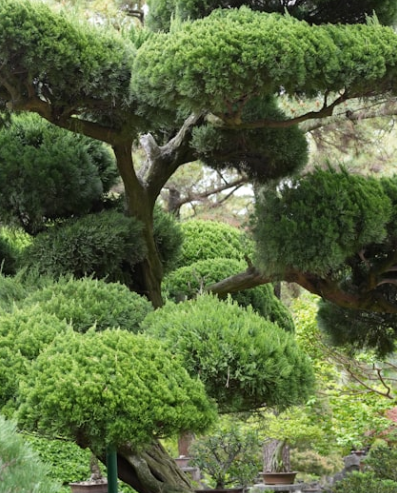
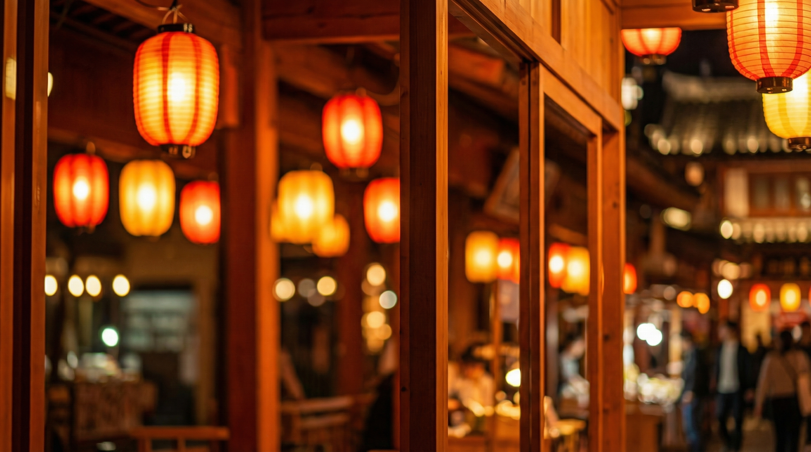
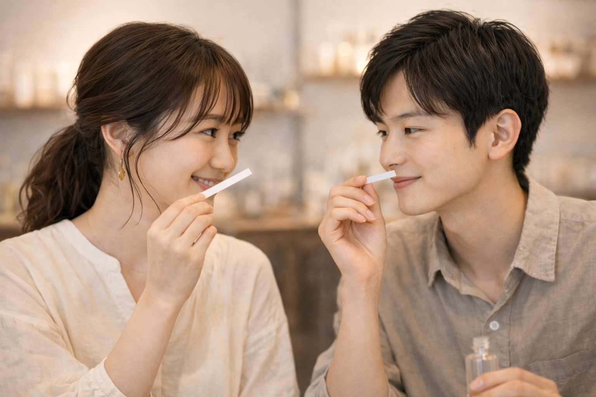
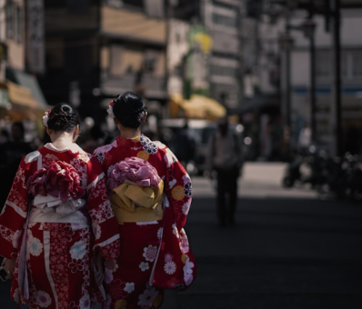
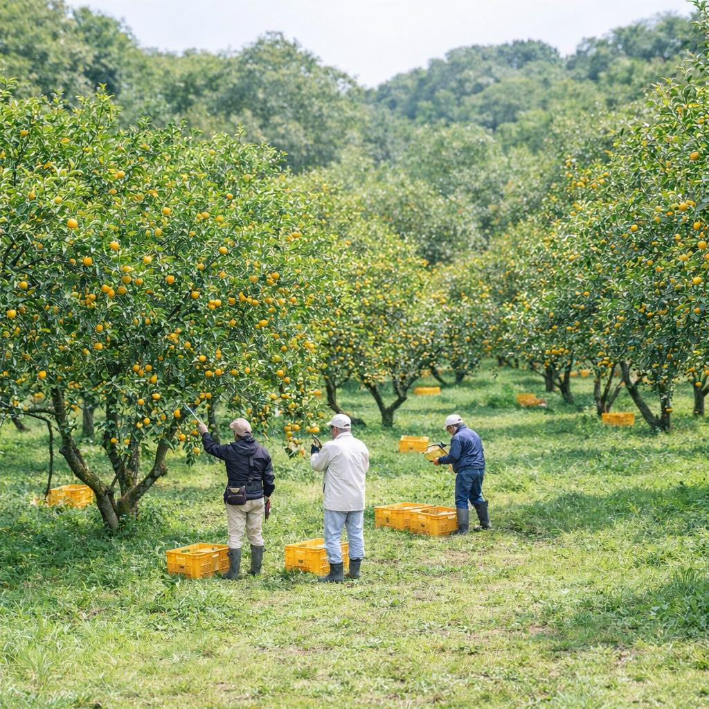
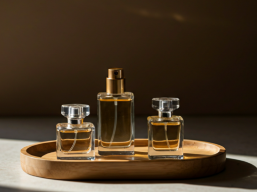

日本文化を深く味わいたい旅行者へ
ただ観光するだけでなく、日本の一部を意味のあるかたちで持ち帰りたい方におすすめです。
浅草ならではの香り体験
SCENT OF ASA
は、日本で過ごした時間に着想を得て、
自分だけの香りを作るカルチャーフレグランスワークショップです。
香水を作るだけではなく、旅の思い出を身につけて持ち帰れる
個人的なかたちに変える体験です。




ただ観光するだけでなく、日本の一部を意味のあるかたちで持ち帰りたい方におすすめです。

東京で共有した時間を、旅が終わったあとも残せる思い出にしたいお二人にぴったりです。

物語や手仕事、感情的な価値を感じられる、個人的なおみやげを探している方に向いています。
浅草は、ただ訪れる場所ではなく、空気や物語、文化の記憶が重なる場所です。 店頭でおみやげを買う代わりに、自分自身の日本体験を映したものを、自分の手で作ることができます。
好きな香りを選ぶだけの体験ではなく、素材の背景や意味、日本のものづくりに触れることで、
より深みのある体験になります。




自分で作った香りが、旅が終わったあとも日本で過ごした時間を思い出させてくれる個人的な記憶になります。
選ぶのは香りだけではありません。旅につながる物語、気分、記憶までも一緒に選んでいきます。
帰国後の静かな時間にも、その香りが旅の感覚を自然によみがえらせてくれるように設計されています。
旅の中で心に残った風景や気分、思い出をもとに、香りの方向性を探していきます。
初めてでも分かりやすいガイドとともに、自分だけのフレグランスをブレンドします。
浅草で作った、あなただけの香りを、思い出とともに持ち帰ることができます。

完成した50mlの香水をお持ち帰りいただけます。
香水の知識は必要ありません。
浅草での旅行に組み込みやすく、分かりやすく、
心地よく参加できるように設計されています。
本当に印象に残る旅のおみやげには、自分自身の物語があります。オリジナルの香りは、帰国後もそばに残る浅草の小さな記憶になります。
よくあるアクティビティでも、よくあるおみやげでもない体験を探している旅行者に人気です。

"浅草での美しく思い出深い体験でした。自分で作ったものを持ち帰れたのが本当にうれしかったです。"

"とてもパーソナルで落ち着いた時間で、普通の観光とはまったく違う特別さがありました。"

"東京旅行の中で一緒に作ったこの体験は、私たちにとっていちばん好きな思い出のひとつになりました。"
旅のひとコマを、持ち帰れて、あとから身につけられて、長く思い返せるものへと変えてみませんか。